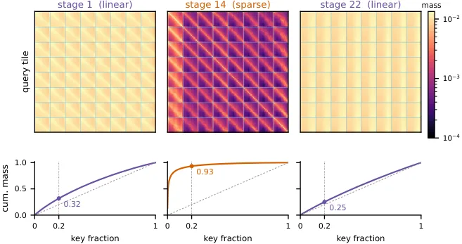
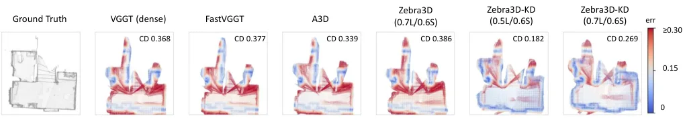
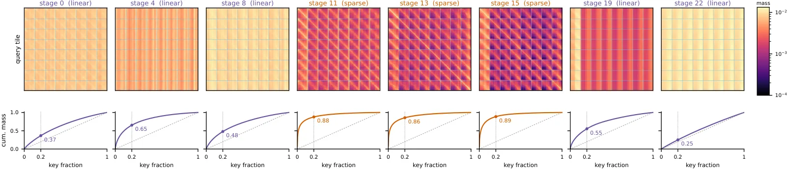
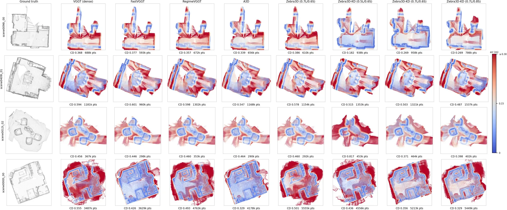
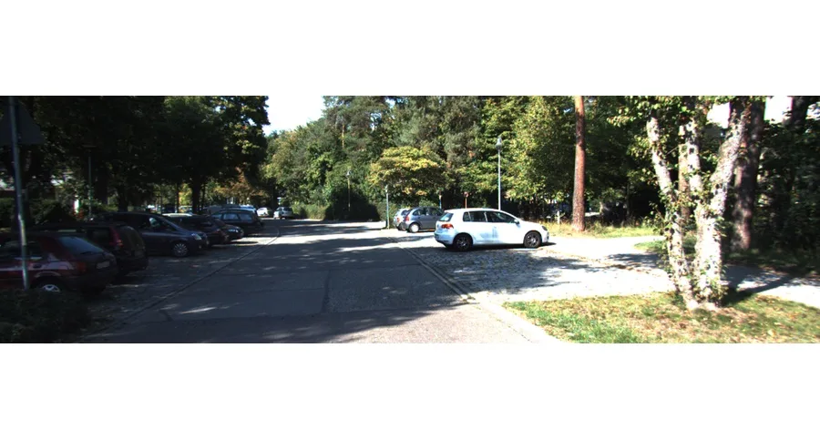

Zebra3D：用敏感性引导的稀疏-线性混合注意力加速 3D 基础模型
Zebra3D: Efficient Hybrid Foundation Models For Scalable 3D Reconstruction
先用“单阶段替换的输出偏差 + oracle top-20% key/value 块的注意力集中度”给每套骨干的每个全局注意力阶段排序，再把最不敏感的阶段换成带闭式岭回归仿射校正的线性注意力、把敏感阶段保留为 8×8 tile 稀疏注意力（未选中 tile 用均值 key/value + log n_b 占用偏移的 landmark 参与同一个 softmax）。免训练转换在约 79% 平均稀疏度下把 RE10K AUC@30 与稠密骨干的差距压在 0.007/0.004/0.006（VGGT/HYWM/π³）；3000 步蒸馏精炼后 Zebra3D-VGGT 在 94% 稀疏度下达到 0.805 AUC@30（稠密同调度微调 0.816）；1024 视角端到端加速 6.2×/5.5×/7.1×，1000 帧 ScanNet-50 上 0.7L/0.6S 的 Chamfer 0.447 反而低于稠密 VGGT 的 0.466 且快 3.54×。
mean attention sparsity
RE10K AUC@30
end-to-end speedup at 1,024 views
Chamfer distance @1,000 frames
作者、单位与技术谱系 · Research context
作者与单位
研究脉络
- VGGT（Visual Geometry Grounded Transformer）方法基座关系：被转换的目标骨干，同时充当精度上界与蒸馏教师：Zebra3D 保留其输入编码器、QKV/输出投影、归一化、位置编码与预测头等全部兼容参数，只替换 global-attention 算子，并用其冻结激活做闭式拟合与关系蒸馏。[VGGT 论文摘要页]
- HunyuanWorld-Mirror (WorldMirror) 与 π³方法基座关系：另外两套被转换的骨干：敏感性规律在两者上同样成立，且训练数据与标定场景都从 HunyuanWorld-Mirror 生态取得（取其训练混合集的 20% 子集与随附示例场景）。[WorldMirror 论文摘要页]
- FastVGGT / AVGGT(A3D) / Block-Sparse VGGT / Lite3R / RegimeVGGT本篇推进关系：同一问题上的上游加速路线（token 合并、key/value 子采样、块稀疏或稀疏-线性替换），它们整网或整块统一替换算子；Zebra3D 的差别是按逐阶段敏感性把线性与稀疏分配到不同深度，并给未选中 tile 加 landmark 尾部。[官方 HTML 全文（第 2 节与第 4 节）]
合作网络
- AMD 内部共同署名Advanced Micro Devices Inc. (AMD) → Zebra3D 六位作者关系：共同署名 / 同一单位[arXiv 摘要页（作者与单位）]
- 对三套发布权重标识的依赖Zebra3D → facebook/VGGT-1B、tencent/HunyuanWorld-Mirror、yyfz233/Pi3关系：官方权重依赖（明确技术依赖）[官方 HTML 全文（附录 B.1）]
- 训练数据与标定场景来自 HunyuanWorld-Mirror 混合集Zebra3D-KD 与本篇标定流程 → HunyuanWorld-Mirror 训练混合集与示例场景关系：数据集依赖 / 标定场景来源[官方 HTML 全文（附录 B.6）]
- 代码与内核的发布状态Zebra3D → 预计公开发布的代码与 checkpoint关系：待发布的发布承诺（尚未核验）[官方 HTML 全文（Reproducibility Statement）]
作者、单位与权重依赖来自论文首页与附录 B.1/B.6（论文报告的事实）；谱系条目中的“上游/基座”定位来自论文第 2 节与参考文献表，属基于来源的解读；跨机构合作关系未发现任何公开证据，故不写导师、师生或实验室隶属关系；代码发布状态以论文承诺为准，未做额外推断。
方法本质拆解 · What actually changed
是不是微调？——两条路径，默认路径完全不训练
默认路径不训练：只用 13 个标定场景对每个被替换的阶段做一次闭式岭回归求解仿射校正，不更新任何继承权重，因此输入编码器、QKV/输出投影、归一化、位置编码与预测头都保持发布时的取值。可选路径 Zebra3D-KD 从转换后的模型出发，用冻结稠密教师再训 3000 次更新，且学生全部参数可训（预训练组 1e-5、骨干组 3e-5、新增组 1e-4 的峰值学习率，250 步线性预热后余弦衰减到 10%）。训练配置为 8×AMD MI355X、DDP、BF16 学生混合精度、四步梯度累积、最多 16 视角/GPU micro-batch、seed 42、Triton 3.7.1；所以权重确实会变，但只有走 KD 分支时才会变。
有没有额外约束？——只改算子，并给算子加结构约束
替换对象是注意力算子而非 3D 表示，并附加了几条硬结构约束：线性阶段的输出被强制分解为 value 均值 + 只对残差的仿射校正（P、b 由闭式拟合给出，P=I,b=0 与 P=0,b=0 分别对应原始线性注意力与均值池化两个端点）；landmark 的 logit 强制带 log n_b 占用偏移以补偿被压缩的 token 数；特殊 token 的 query 行保持稠密、每个 patch query 保留自身 key。分配侧给每套骨干固定一张零基阶段表（VGGT 0.5L：线性 1–6、8、18、20–23，稀疏 0、7、9–17、19），并用配置码 xL/yS 固定线性阶段比例与稀疏保留率 ρ=1−y。KD 分支还叠加任务监督（VGGT/HYWM 用相机/点图/深度三个损失，顶层权重 5.0/1.0/1.0，且相对发布配置额外打开了点损失；π³ 用其自身目标）与蒸馏项 L_feat = 0.25·L1 + 0.50·Lcos + 0.25·Lrel，λ_KD 从 1.0 衰减到约 0.6。
推理/后端到底做了什么？——改写注意力内核，没有新几何后端
推理侧只是一个改写过的注意力内核：稠密全局注意力被逐层替换为线性或 tile-sparse 算子，没有任何因子图、全局 BA 或逐场景优化。tile-sparse 用 Triton 打包实现——key/value 按 tile-major 重排、缓存排列与特殊 token 索引、以 FlashAttention 式在线 softmax 流式累加四类贡献（选中块内 token、全部特殊 token key、自身 key、每个未选中块的占用加权 landmark），不物化 N×N 注意力矩阵；每个 query 只评估选中 tile 的 key（保留率 ρ=0.2 或 0.4）、每个未选中 tile 的 landmark、全部特殊 token key 与自身 key。KD 分支只在训练时需要一次额外教师前向用于蒸馏，推理路径不含任何教师计算，这也是论文强调“精炼不增加推理成本”的依据。
方法本质是什么？——按敏感性重新分配注意力的近似形式
本质是把“注意力近似的误差预算”按深度重新分配：先用单阶段替换的输出偏差与注意力集中度两个独立诊断量给每层排序，在注意力已经集中的敏感层保留 token 级 softmax（但只算选中的 8×8 tile，并用均值 landmark 补齐其余 tile），在注意力接近均匀的层换成线性注意力（并用只作用于残差的闭式仿射校正把线性输出拉回稠密教师的分布），从而在不改表示、不加重训练的前提下保住几何精度。它改变的是近似误差在深度方向上的分布，而不是模型容量或表示形式；明确没有做的是：没有引入新的 3D 表示或几何解码器、没有加全局优化或因子图、也没有按输入自适应调整分配（作者把 input-adaptive allocation 列为未来工作）。
输入/先验 = 已发布的稠密 FF3D 权重 + 来自 13 个标定场景的冻结教师激活；改变的位置 = 每套骨干的全部 global-attention 算子（按逐阶段敏感性分为线性与 tile-sparse 两类）；约束或合并动作 = 逐阶段闭式岭回归的残差仿射校正 + landmark 占用修正与共用 softmax，可选的 3000 步任务监督叠加关系蒸馏；直接效果 = 在 79–94% 平均注意力稀疏度下精度接近稠密骨干，1024 视角端到端加速 5.5–7.1×，1000 帧 ScanNet-50 的 Chamfer 距离可低于稠密骨干。

动机与问题Motivation
动机与问题
前馈 3D 基础模型（VGGT、HunyuanWorld-Mirror、π³ 等）一次前向就同时给出相机位姿与稠密场景几何，免掉了逐场景优化；但代价没有消失——全局注意力随输入视角数二次增长，论文实测在 512 视角下全局注意力占 VGGT 端到端耗时的 88%。既有加速路线分为三类：合并 image token、对 key/value 做子采样、以及用稀疏或线性算子替换稠密注意力；其中稀疏/线性替换往往整网统一施加，忽略了一个事实：预训练模型不同深度阶段对“被近似成什么样”的容忍度并不相同。论文把问题收窄成一个可测量的问题：能否让预训练模型自己指出哪些阶段可以线性化、哪些阶段必须保留 token 级 softmax 交互？作者用两个独立诊断量回答——一次只替换一个阶段后相对稠密教师的输出偏差（敏感性），以及 oracle 保留 top-20% key/value 块时留存的注意力质量（集中度）；得到的规律是：对线性化敏感的阶段注意力更集中，两端阶段注意力接近均匀，因此“集中的地方用稀疏、均匀的地方用线性”。
方法Method
方法总览
第一段诊断：一次只把一个全局注意力阶段换成拟合后的 linear-centered 算子，在验证集上按输出模态（点图、深度、位姿等）测量与稠密教师的偏差，取跨模态平均排名作为该阶段敏感性 r_ℓ；同时用 oracle 选择 top-20% 的 64-token key/value 块测量注意力集中度。VGGT 上的输出偏差峰值落在第 11–15 层，向两端衰减，HYWM 与 π³ 上呈同构规律。第二段分配：给定目标线性比例 p，把敏感性最低的 K=round(pL) 个阶段分给线性注意力，其余分给 tile-sparse 注意力。第三段算子构造：线性阶段用逐阶段闭式岭回归拟合仿射校正（只作用于 value 均值之外的残差）；稀疏阶段把每个视角的 patch token 还原到 2D 网格、切成不重叠的 8×8 tile（64 token），按 tile 平均 query/key 的打分做 TopK 选择，未选中的 tile 用其均值 key、均值 value 与有效 token 数 n_b 合成一个 landmark，与选中 token 共用同一个 softmax 归一化。第四段可选精炼：以冻结的稠密模型为教师，用任务监督叠加输出蒸馏与中间特征/跨视角关系蒸馏训练 3000 步；也可以完全不做梯度更新，直接使用转换后的模型。
关键技术细节
线性注意力写作 O_lin = φ(Q)(φ(K)ᵀV)/(φ(Q)(φ(K)ᵀ1)+ε)，φ 是沿通道维的 softmax，计算量降为 O(N·d_h²)。“centered”体现在把输出按 value 均值分解：Õ_ℓ = V̄ + (O_lin − V̄)P_ℓ + 1·b_ℓᵀ；因为均匀注意力恰好等价于 value 均值池化，所以只对残差拟合仿射映射，能在保留这个自然基线的同时校正细粒度 token 差异——P=I,b=0 退化为原始线性注意力，P=0,b=0 退化为均值池化；P_ℓ、b_ℓ 由冻结教师激活在 13 个标定场景上做一次 float64 岭回归闭式求解，不更新任何继承权重。稀疏阶段中同一 tile 的 query 共享选中的 key tile 集合 S_a，但在选中 tile 内仍逐 query–key 计算；landmark 的 logit 带 log n_b 偏移以修正被压缩的 token 数，特殊 token 的 query 行保持稠密、每个 patch query 保留自身 key。工程上是 Triton 打包内核：key/value 按 tile-major 重排、缓存排列/逆排列/特殊 token 索引、以 FlashAttention 式在线 softmax 流式累加四类贡献（选中块内 token、全部特殊 token key、自身 key、每个未选中块的占用加权 landmark），softmax 状态与输出累加用 FP32、矩阵乘用 BF16，并把 log2 e 折叠进注意力缩放后调用硬件 exp2，因此不物化 N×N 注意力矩阵。阶段分配按骨干固定成零基表，例如 VGGT 0.5L 把第 1–6、8、18、20–23 层设为线性，第 0、7、9–17、19 层设为稀疏；配置码 xL/yS 中的 y 对应稀疏保留率 ρ=1−y。

实验Experiments
实验设置
骨干与权重：直接使用已发布的 facebook/VGGT-1B、tencent/HunyuanWorld-Mirror、yyfz233/Pi3 checkpoint，转换保留输入编码器、QKV 与输出投影、归一化、位置编码和预测头等全部兼容参数。免训练转换只用 13 个来自 HunyuanWorld-Mirror 示例的多视角标定场景做闭式拟合（不跑梯度、且它们不进入任何指标表）；Zebra3D-KD 从转换后模型出发，用冻结稠密教师训练 3000 次更新。评测：点图重建用 7Scenes、NRGBD、DTU（518×378 输入，7Scenes/NRGBD 取 stride 10），相机位姿用 RealEstate10K 与 CO3Dv2 的十视角协议（RE10K 用 seed-42 的 1719 个测试 clip、每 clip 10 帧；CO3Dv2 按 VGGT 十帧协议在 41 类上宏平均），长序列用 ScanNet-50（100/300/500/1000 帧，Chamfer 距离经 0.05 体素下采样、0.5 截断、10 万点采样并按包围盒对角线归一），宽基线用 Tanks and Temples、ETH3D 与 DTU（N∈{8,16,32,64}）。对照方法：原始稠密骨干、FastVGGT、SAF3R、RegimeVGGT、Lite3R，以及架构对齐的 A3D（AVGGT-f4）与 Block Sparse 3D；另有 VGGT+GT-FT 作为“同数据、同 3000 步、同监督”的稠密微调对照。指标：点图用 Umeyama 对齐 + ICP 精化后的 accuracy/completeness 与 NC1，位姿用 AUC@30、RTA-5、AUC-3，长序列用 Chamfer 距离与端到端加速比。计时在单张 MI355X 上以 BF16 + Inductor 完成，取各自配置的中位耗时，每配置 5 次预热 + 20 次设备事件测量（1024 帧用 2 次预热 + 5 次），不含输入加载与预处理。
实验数字与比较
免训练转换（来源：论文表 1）：0.5L/0.6S 在约 79% 平均稀疏度下，RealEstate10K AUC@30 为 0.737（VGGT，稠密 0.744）、0.856（HYWM，稠密 0.860）、0.871（π³，稠密 0.877），分别只差 0.007/0.004/0.006；CO3Dv2 AUC-30 为 0.897（VGGT）/0.862（HYWM）/0.900（π³），论文称这是每套骨干中非稠密方法的最高值——同骨干对照下 VGGT 的 FastVGGT 0.867、A3D 0.881、RegimeVGGT 0.876、Lite3R 仅 0.779。把稀疏保留从 0.6S 压到 0.8S（线性分配不变）把平均稀疏度提到约 89%，RE10K AUC@30 再降 0.7/0.6/0.5 个百分点。精炼后（来源：论文表 1 与正文）：Zebra3D-KD 0.5L/0.6S 把 VGGT 的 RE10K AUC@30 从 0.737 提到 0.805，7Scenes/NRGBD 精度误差降到 0.015/0.024；0.7L/0.8S 在约 94% 平均稀疏度下同样达到 0.805，与同数据同调度微调的稠密 VGGT（VGGT+GT-FT 0.816）相差 1.1 个百分点。长序列（来源：论文表 2，ScanNet-50，1000 帧）：Zebra3D-KD 0.7L/0.6S 的 Chamfer 距离 0.447 低于稠密 VGGT 的 0.466，同时 3.54× 加速；0.7L/0.8S 为 0.460 / 5.60×，其加速比从 100 帧的 1.86× 增长到 1000 帧的 5.60×；对照 A3D 为 0.452/3.83×、FastVGGT 0.464/3.97×、RegimeVGGT 0.478/3.50×、Block Sparse 3D 0.471/2.33×，而稠密微调对照 VGGT+GT-FT 的 Chamfer 反而升到 0.503。效率（来源：论文图 5）：1024 视角下相对各骨干分别为 6.2×（VGGT）、5.5×（HYWM）、7.1×（π³）。宽基线（来源：论文表 22）：所有 0.5L 配置在 Tanks and Temples、ETH3D、DTU 上的 NC1 都落在其稠密骨干的 3% 以内（最大差距 2.9%，HYWM 0.5L/0.8S 的 0.6790 对 0.6992）。
消融/失败边界
线性算子（来源：论文表 3a，π³，0.7L/0.8S，RE10K AUC@30）：直接用帧注意力 0.655 → 线性但不拟合 0.789 → 不居中拟合 0.811 → 居中+拟合 0.836，说明拟合与居中各自都有贡献；同期 NRGBD 精度误差从 0.071 降到 0.043。稀疏算子（来源：论文表 3b，π³，0.5L/0.75S）：去掉 landmark 尾部后，tile-sparse 的 AUC@30 从 0.868 掉到 0.811、NRGBD 精度误差从 0.014 恶化到 0.066；block sparse 版本同理从 0.864 掉到 0.808。层分配（来源：论文表 3d，固定 0.5L/0.8S 预算）：敏感性引导在 VGGT/HYWM/π³ 上分别为 0.730/0.850/0.866，而均匀分配只有 0.115/0.142/0.148、随机分配 0.318/0.216/0.063、反向敏感性 0.114/0.137/0.033——同样的替换预算，落在不同阶段上差异巨大。蒸馏目标（来源：论文表 3c，VGGT，0.5L/0.6S）：只用真值 0.777、只用蒸馏 0.716（反而更差）、真值+输出蒸馏 0.736、真值+特征蒸馏 0.756，完整目标（含跨视角关系项）0.805 且 7Scenes/NRGBD 降到 0.015/0.024。明确的失败边界有两处：其一，宽基线上 0.7L 明显不如在视频类基准上稳，π³ 0.7L/0.8S 在 Tanks and Temples 掉 0.076 NC1（相对 10.4%）、ETH3D 掉 0.054（6.4%），DTU 精度从 1.0550 mm 涨到 1.9583 mm，作者归因于 π³ 的敏感带最靠后、提高线性比例最早侵入敏感带；其二，精炼训练会让 CO3Dv2 与 NRGBD 变差（同样的退步也出现在稠密对照上，说明不全由注意力替换造成），Tanks and Temples 上 HYWM 的完整度在 0.5L/0.6S 时恶化 +0.53 m（蒸馏后收敛到 +0.04 m）。标定稳定性（来源：论文附录 C.3）：五个标定数据集给出的敏感性排名 Spearman 相关为 0.843–0.886，阶段分配一致率在 0.5L 时 81.5–88.9%、在 0.7L 时 93.5–97.2%。
局限与迁移Limitations & Transfer
局限与待核验
作者明确承认的限制：主要收益在长序列（全局注意力主导耗时）场景，8–16 视角下加速有限；随着注意力变便宜，图像编码器与预测头会成为端到端加速的新上限。阶段分配按骨干固定、由单阶段边际敏感性推出，不建模多个阶段同时被替换的相互作用，也不随单次输入自适应；虽然在本论文的标定集上稳定，能否推广到差异很大的架构与领域仍然待验证。优化的内核与加速基准都面向 AMD MI355X 上的 Triton，其他加速器的可移植性与性能需另行评估；附录 F.2 同时说明可选蒸馏在精炼阶段需要一次额外的冻结教师前向（推理时不增加开销）。可复现性声明称将在发表后发布源码、配置、自定义内核与训练好的 checkpoint，抓取时未发现可访问的项目页或代码仓库，因此端到端复现与代码可达性属于我们的待核验项。其他待核验项：(a) 论文给出的阶段分配表只覆盖 VGGT/HYWM/π³ 三套已发布骨干，换到自研骨干需重跑敏感性诊断，其成本与稳定性没有报告；(b) 免训练转换依赖从同源示例取得的 13 个标定场景，换用真实采集数据后的端到端影响没有直接实验，只有阶段一致率的间接证据；(c) KD 训练序列最长 16 视角，而评测最长做到 1024 帧，长序列收益来自泛化而非训练分布，论文没有给出更长训练序列的对照；(d) 全部计时在同一块 MI355X 上取得，NVIDIA/消费级平台上的加速比无法由原文确认。
与你研究路线的关系
可迁移点有三。第一，“用单阶段替换的输出偏差 + 注意力集中度做算子分配”是一套通用的“让预训练模型自己指出哪里可以降精度”的诊断流程，与你在多源融合里判断“哪个环节可以先验简化、哪个环节必须保留完整残差”同构；实现上只需要一次前向扰动加一次闭式拟合，成本低，可直接在自研骨干上复现。第二，landmark 尾部（均值 key/value + log n_b 占用修正 + 与选中 token 共用同一个 softmax 归一化）是把“被压缩掉的信息”以近似充分统计量的形式重新引入，可类比到你把低置信度观测聚成块级先验、再与高置信度观测联合解算的做法。第三，闭式类比标定（对残差做岭回归并保留 value 均值基线）提供了一个“不训练也能把新算子对齐到旧后端输出分布”的模板，在你要替换既有估计器中的某个模块时可以直接借用“先对齐残差、再谈精度”的顺序。下一步实验建议：(a) 在你现有的长序列数据上用同一批视角数（512/1024）做“均匀替换 vs 敏感性引导替换”的最小对照，验证阶段分配收益是否也出现在非 3D 基础模型骨干上；(b) 把“注意力集中度”换成你的观测可靠性指标（例如重投影残差集中度、几何退化判据），检验同一套分配逻辑是否成立；(c) 若要把转换后的模型接到下游位姿/建图后端，优先在 0.5L 配置上做宽基线评测——论文证据表明 0.7L 在宽基线下会明显退化。







